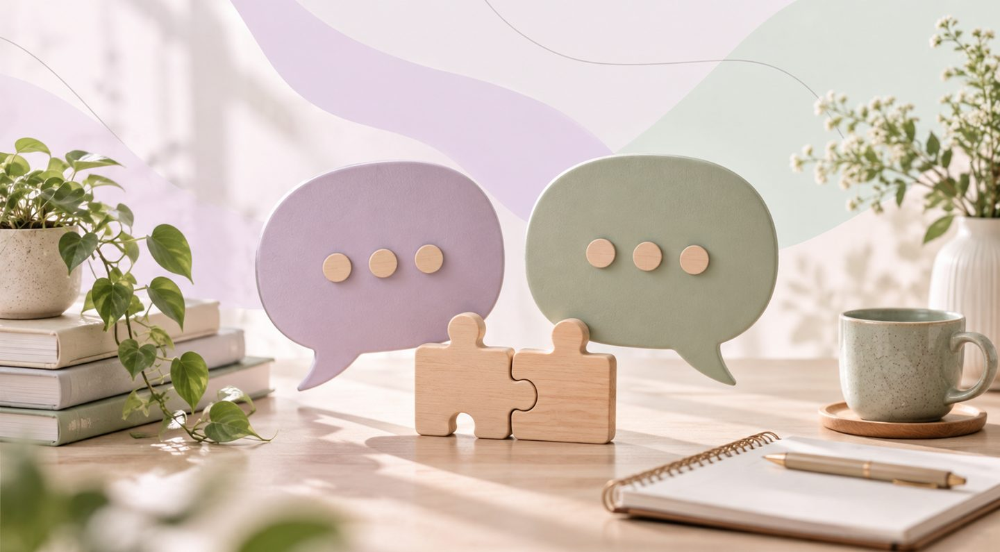
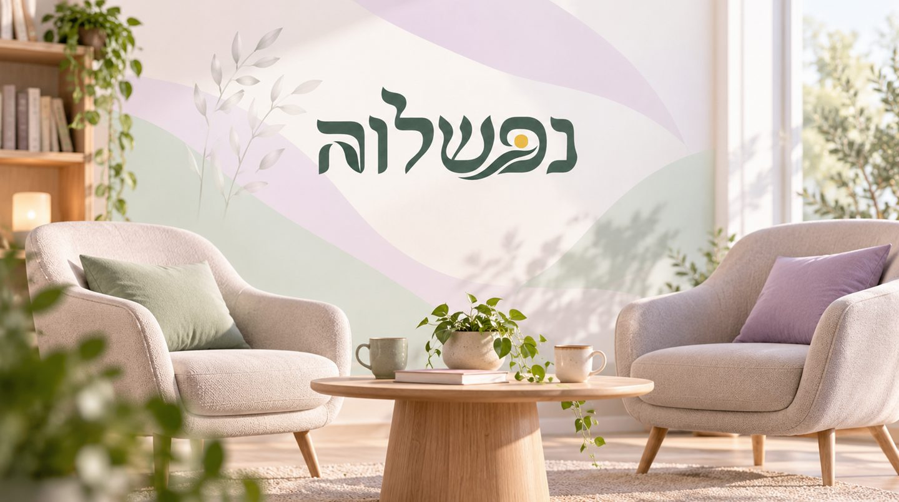

This article is written for women and men alike.
Sometimes all we want is for our partner to listen to us. Not to offer a solution, not to explain why we're exaggerating and not to try to convince us to see things differently. Just to listen.
But with the person closest to us, that doesn't always happen. A conversation that starts with a wish to share turns into an argument, a remark made innocently is taken as criticism, and in the end we're both left with the same frustrating feeling: "He just doesn't understand me" or "She doesn't even hear what I'm saying".
This gap doesn't necessarily point to a lack of love. Sometimes it comes from differences in the way we express emotions, interpret messages and respond to the other person's needs.
Listening to understand, or listening to reply?
Imagine one partner coming home after an exhausting day and starting to talk about something hard that happened at work. Before they've even finished, the other partner is offering solutions: "So why didn't you tell your manager?", "Just stop taking it to heart".
The intention may be good, but the result can be the opposite. The one who wanted to be listened to and supported feels they weren't really understood. One of the most common mistakes in couple communication is assuming the person in front of us needs exactly what we would want to receive in the same situation.
Some people feel loved when they're offered a practical solution, and others first need their feelings acknowledged. When we don't recognize the difference, even an attempt to help can come across as insensitive.
How can one interpretation create a relationship crisis?
It isn't only the words that shape a conversation, but also the meaning we give them.
Say one partner says: "I don't have the energy to talk right now". The other may interpret it as "he doesn't care about me", even though the partner may simply be tired and need rest.
When interpretations like these keep recurring, they can create feelings of rejection, anger and disappointment. Over time, even simple conversations become more sensitive, and sometimes a sense of a relationship in crisis develops, even though both sides still want closeness.
The ability to stop and ask "what did you mean?" instead of assuming we already know the answer can change the direction of the conversation.

Connected communication starts with genuine curiosity
Connected communication isn't just a way of speaking politely. It's an approach that encourages looking at our own feelings and needs and those of the person in front of us, while trying to reduce blame and judgment.
To improve communication, you can start with simple questions:
- "Do you want me to listen, or should we think about a solution together?"
- "What was hardest for you about what happened?"
- "When I said that, how did you understand it?"
- "What did you need from me in that moment?"
These questions don't guarantee agreement, but they allow each partner to feel there's room for their point of view.
It's also important to remember that listening doesn't require giving up your own position. You can understand your partner's pain and still see things differently.
What happens when the feeling of not being understood becomes constant?
When one partner feels again and again that they aren't being listened to, they may stop sharing. Sometimes they choose silence to avoid another disappointment, and sometimes they react with anger in an attempt to get attention.
This can create a cycle in which each side feels hurt, but finds it hard to see that the person in front of them is struggling too.
In situations like these, it isn't always enough to learn new phrases or change your tone of voice. Sometimes a deeper look is needed at the communication habits, expectations and reactions that have become fixed over the years.
The right couples therapy can help partners identify the patterns that drive them apart, explore ways of resolving conflicts and develop tools for strengthening their emotional bond.
You can learn to listen again, even after years
A good relationship isn't measured by how often partners agree, but also by their ability to stay attentive when they see things differently.
Sometimes change starts with a small decision: not to rush to respond, not to finish the other person's sentence and not to assume we already know what they feel.
In times of pressure, change or a relationship crisis, this ability is especially important. It allows partners to face difficulties and get through crises together, instead of feeling they're standing on opposite sides of the barricade.

Nefeshlava: sometimes all it takes is learning to listen differently
When the same conversations end in frustration again and again, you don't have to keep coping alone.
At the Nefeshlava clinic, Alon Shemesh guides couples through a personal, attentive process, using tools from the world of NLP to identify thought patterns, interpretations and automatic reactions. The goal is to help partners understand each other better and explore new ways of communicating and being close.
On the Nefeshlava website, the home of emotional therapy with NLP, you can get to know the approach, the guidance options and how to start with an intro call.